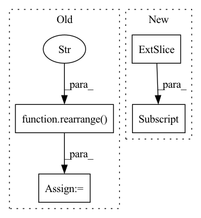

Pattern ID :2425
Before Change
gate = rearrange(gate, "b n (h d) -> b h n d", h = h)
gate = einsum("b h n d, h n m -> b h m d", gate, weight)
gate = gate + rearrange(bias, "h n -> () h n ()")
gate = rearrange( gate, "b h n d -> b n (h d)" )
return gate * res
def gMLPBlock(After Change
gate = self.norm(gate)
gate = F.pad(gate, (0, 0, 0, 0, 1, 0), value = 0.)
gate = torch.cat((gate[:, :-1], gate[:, 1:] ), dim = 2)
weight, bias = self.weight, self.bias
In pattern: SUPERPATTERN
Frequency: 3
Non-data size: 4
Instances Fragment ID: 14587036
Project Name: lucidrains/g-mlp-gpt
Commit Name: a2f065dfcf7be1d1e4b205ac1a55de4ad1b3327d
Time: 2021-05-20
Author: lucidrains@gmail.com
File Name: g_mlp_gpt/g_mlp_gpt.py
M Class Name: CausalSpatialGatingUnit
N Class Name: CausalLocalSGU
M Method Name: forward(2)
N Method Name: forward(2)
M Parent Class: nn.Module
N Parent Class: nn.Module
M File Name: g_mlp_gpt/g_mlp_gpt.py
N File Name: g_mlp_gpt/g_mlp_gpt.py
M Start Line: 90
M End Line: 100
N Start Line: 130
N End Line: 154
Before Change
// cross attention
x = rearrange( x, "b i j d -> b (i j) d" )
m = msa_cross_attn(
m,
mask = msa_mask,After Change
m = self.token_emb(msa)
m += self.msa_pos_emb(torch.arange(msa.shape[-1], device = device))[None, None, ...]
m += self.msa_num_pos_emb(torch.arange(msa.shape[1], device = device))[None, :, None, :]
m = rearrange(m, "b m n d -> b (m n) d")
if exists(msa_mask): Fragment ID: 14587022
Project Name: lucidrains/alphafold2
Commit Name: 98656753d134de0dee4c686ab9d19e0270d2f6ff
Time: 2020-12-28
Author: lucidrains@gmail.com
File Name: alphafold2_pytorch/alphafold2.py
M Class Name: Alphafold2
N Class Name: Alphafold2
M Method Name: forward(5)
N Method Name: forward(5)
M Parent Class: nn.Module
N Parent Class: nn.Module
M File Name: alphafold2_pytorch/alphafold2.py
N File Name: alphafold2_pytorch/alphafold2.py
M Start Line: 174
M End Line: 211
N Start Line: 191
N End Line: 197
Before Change
attended = transformer(stage_tokens[:, :-1])
attended = rearrange_with_anon_dims(attended, "(...b) n d -> ...b n d", b = prec_dims)
start_tokens = rearrange( attended, "... n d -> ... n 1 d" )
logits = self.to_logits(attended)
if flattened_dims:After Change
logits = self.to_logits(attended)
if not return_loss:
logits = logits[..., 1:, :]
if flattened_dims:
logits = rearrange(logits, "b ... n -> b (...) n")
logits = logits[:, :seq_len] Fragment ID: 14587032
Project Name: lucidrains/rq-transformer
Commit Name: 56a8e24814d90cebb03454d9feed0bff4bee69ba
Time: 2022-04-12
Author: lucidrains@gmail.com
File Name: rq_transformer/hierarchical_causal_transformer.py
M Class Name: HierarchicalCausalTransformer
N Class Name: HierarchicalCausalTransformer
M Method Name: forward(3)
N Method Name: forward(3)
M Parent Class: nn.Module
N Parent Class: nn.Module
M File Name: rq_transformer/hierarchical_causal_transformer.py
N File Name: rq_transformer/hierarchical_causal_transformer.py
M Start Line: 279
M End Line: 329
N Start Line: 293
N End Line: 344